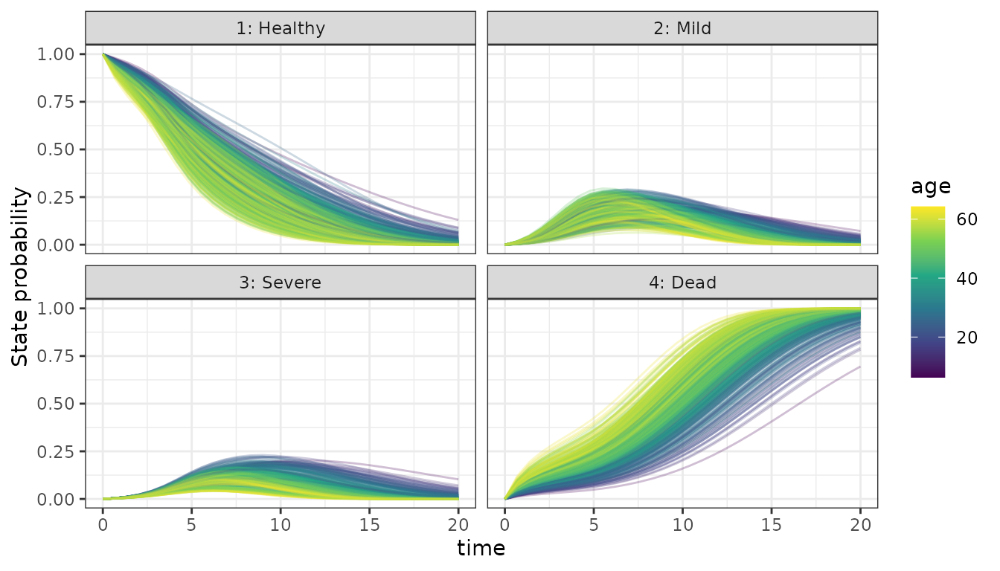
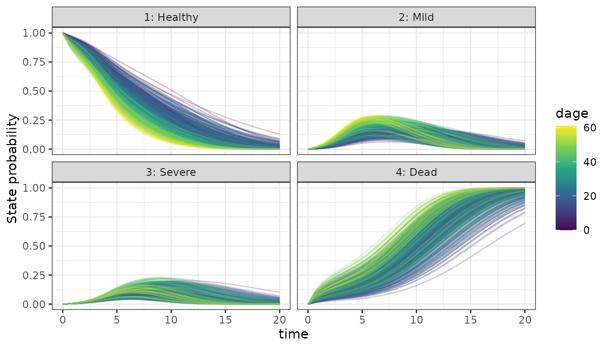
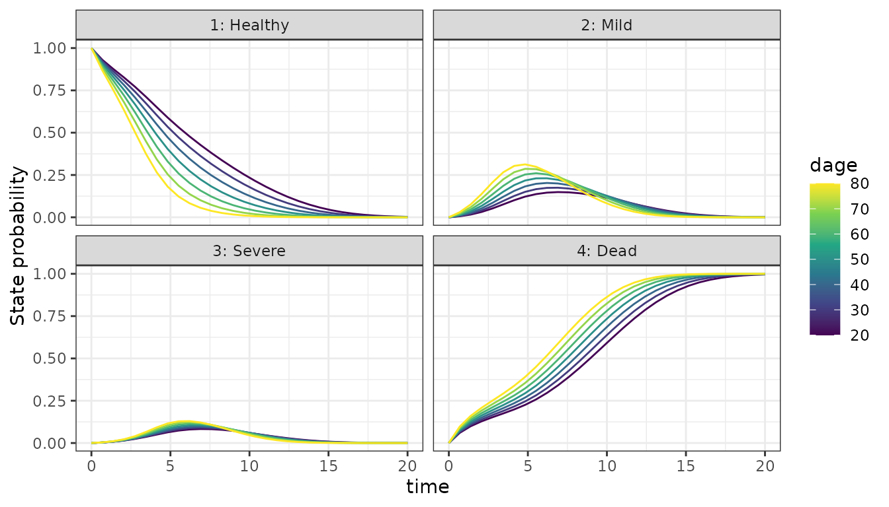
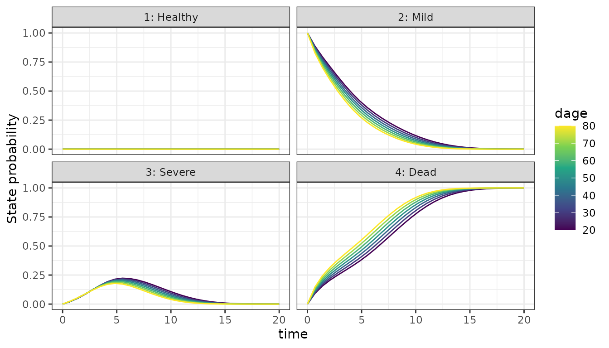
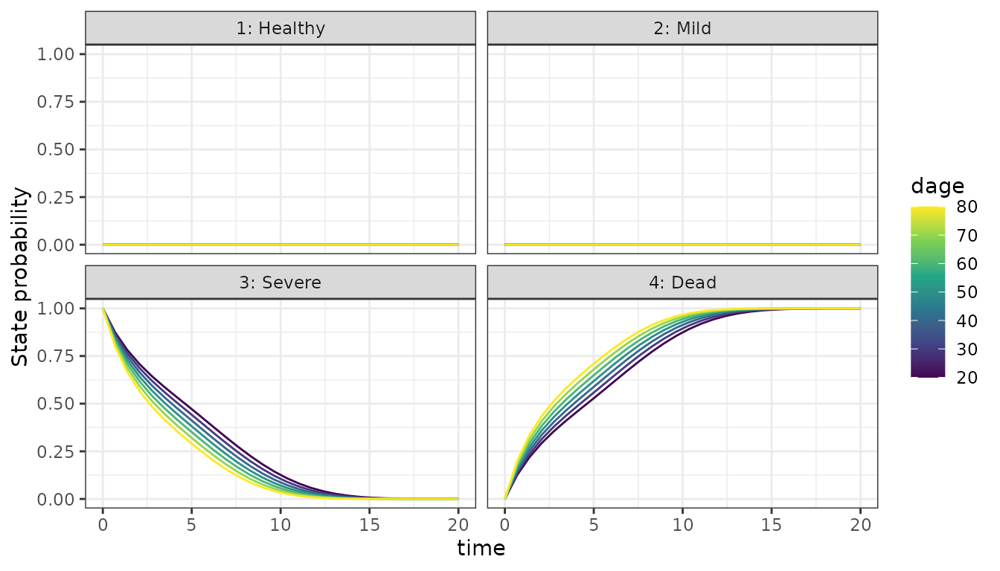
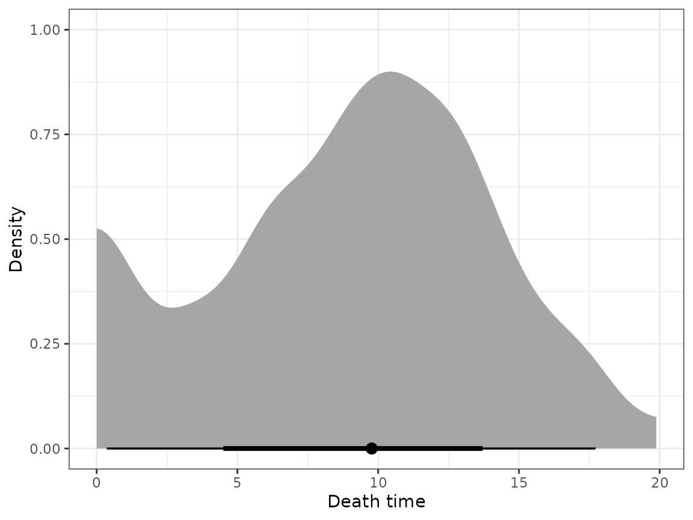

Time-to-event data analysis with the bmstate package
Juho Timonen
4th Nov 2025
analysis.Rmd
library(bmstate)
#> Attached bmstate 0.2.8. Type ?bmstate to get started.
library(ggplot2)
library(dplyr)
#>
#> Attaching package: 'dplyr'
#> The following objects are masked from 'package:stats':
#>
#> filter, lag
#> The following objects are masked from 'package:base':
#>
#> intersect, setdiff, setequal, union
library(tidyr)
library(ggdist)
theme_set(theme_bw())Data
Data preprocessing
Here we analyse the cav data from the msm
package. It is a Cardiac Allograft Vasculopathy (CAV) data set of 622
heart transplant recipients. They are observed either in state 1 (No
CAV), state 2 (Mild CAV), state 3 (Severe CAV), or state 4 (Dead).
First we modify the original data like here.
df_full <- as_tibble(msm::cav) |>
group_by(PTNUM) |>
mutate(
min_age = min(age),
state = cummax(state)
)
head(df_full)
#> # A tibble: 6 × 11
#> # Groups: PTNUM [1]
#> PTNUM age years dage sex pdiag cumrej state firstobs statemax min_age
#> <int> <dbl> <dbl> <int> <int> <fct> <int> <int> <int> <dbl> <dbl>
#> 1 100002 52.5 0 21 0 IHD 0 1 1 1 52.5
#> 2 100002 53.5 1.00 21 0 IHD 2 1 0 1 52.5
#> 3 100002 54.5 2.00 21 0 IHD 2 2 0 2 52.5
#> 4 100002 55.6 3.09 21 0 IHD 2 2 0 2 52.5
#> 5 100002 56.5 4 21 0 IHD 3 2 0 2 52.5
#> 6 100002 57.5 5.00 21 0 IHD 3 3 0 3 52.5This is snapshot data of the state at given time rather than exactly observed transition times. Only the death times are exact. We make an assumption that all state transitions happen exactly at the first time the new state is seen in the data.
We select only needed columns and rename them. In our resulting data frame, we will have columns
-
time: time since transplant (in years) -
age: age of the patient at transplant time -
dage: age of the donor -
sex: 0 or 1
df_full$PTNUM <- as.character(df_full$PTNUM)
df_snapshots <- df_full |> select(PTNUM, state, years, min_age, dage, sex)
df_snapshots <- df_snapshots |> rename(
subject_id = PTNUM,
age = min_age,
time = years
)
head(df_snapshots)
#> # A tibble: 6 × 6
#> # Groups: subject_id [1]
#> subject_id state time age dage sex
#> <chr> <int> <dbl> <dbl> <int> <int>
#> 1 100002 1 0 52.5 21 0
#> 2 100002 1 1.00 52.5 21 0
#> 3 100002 2 2.00 52.5 21 0
#> 4 100002 2 3.09 52.5 21 0
#> 5 100002 2 4 52.5 21 0
#> 6 100002 3 5.00 52.5 21 0We remove the unnecessary snapshot rows that are not needed after making the simplifying assumption.
df_state_changes <- df_snapshots |>
arrange(subject_id, time) |>
group_by(subject_id) |>
mutate(
.first = row_number() == 1,
.last = row_number() == n(),
.chg = state != lag(state) # TRUE at the first row of each new state run
) |>
filter(.first | .last | .chg | is.na(lag(state))) |> # keep first, last, and changes
select(-.first, -.last, -.chg) |>
ungroup()
# Every row is a transition but the first
df_state_changes <- df_state_changes |>
group_by(subject_id) |>
mutate(is_transition = tidyr::replace_na(state != lag(state), FALSE)) |>
ungroup()
head(df_state_changes)
#> # A tibble: 6 × 7
#> subject_id state time age dage sex is_transition
#> <chr> <int> <dbl> <dbl> <int> <int> <lgl>
#> 1 100002 1 0 52.5 21 0 FALSE
#> 2 100002 2 2.00 52.5 21 0 TRUE
#> 3 100002 3 5.00 52.5 21 0 TRUE
#> 4 100002 4 5.85 52.5 21 0 TRUE
#> 5 100003 1 0 29.5 17 0 FALSE
#> 6 100003 3 2.01 29.5 17 0 TRUETransition matrix
We use the following transition matrix, which is built into the package.
tm <- transmat_progression()
tm
#> Healthy Mild Severe Dead
#> Healthy 0 1 1 1
#> Mild 0 0 1 1
#> Severe 0 0 0 1
#> Dead 0 0 0 0The PathData format
We format the data as PathData.
covs <- c("age", "dage", "sex")
pd <- df_to_pathdata(df_state_changes, tm, covs)
pd
#> PathData object with 622 paths
#> * States = {Healthy, Mild, Severe, Dead}
#> * Covariates = {age, dage, sex}Analysis
Fitting a model
We create a model and set the spline knot locations based on quantiles of the observed transition times.
# MSM
mod <- create_msm(tm,
hazard_covs = covs,
n_grid = 10000,
t_max = 20
)
t_trans <- pd$transition_times()
mod$set_knots(t_max = 20, t_event = t_trans, num_knots = 3)
mod$get_knots()
#> [1] 0.000000 4.980822 20.000000We fit the model by optimizing.
fit <- fit_stan(mod, data = pd, method = "optimize")
#> Using stan file at /home/runner/work/_temp/Library/bmstate/stan/msm.stan
#> Initial log joint probability = -362803
#> Iter log prob ||dx|| ||grad|| alpha alpha0 # evals Notes
#> Error evaluating model log probability: Non-finite gradient.
#> Error evaluating model log probability: Non-finite gradient.
#> Error evaluating model log probability: Non-finite gradient.
#> Error evaluating model log probability: Non-finite gradient.
#> 99 -1859.49 0.0281839 13.4581 1 1 121
#> Iter log prob ||dx|| ||grad|| alpha alpha0 # evals Notes
#> 199 -1858.05 0.0152368 1.88641 1 1 227
#> Iter log prob ||dx|| ||grad|| alpha alpha0 # evals Notes
#> 299 -1857.87 0.00716934 2.13723 1 1 338
#> Iter log prob ||dx|| ||grad|| alpha alpha0 # evals Notes
#> 399 -1857.79 0.00653108 1.98944 0.1595 1 449
#> Iter log prob ||dx|| ||grad|| alpha alpha0 # evals Notes
#> 499 -1857.74 0.00123761 0.191422 1 1 556
#> Iter log prob ||dx|| ||grad|| alpha alpha0 # evals Notes
#> 599 -1857.72 0.0095713 0.502378 1 1 663
#> Iter log prob ||dx|| ||grad|| alpha alpha0 # evals Notes
#> 699 -1857.71 0.00255015 0.596568 1 1 772
#> Iter log prob ||dx|| ||grad|| alpha alpha0 # evals Notes
#> 799 -1857.69 0.000664024 0.230892 1 1 880
#> Iter log prob ||dx|| ||grad|| alpha alpha0 # evals Notes
#> 841 -1857.69 0.000797173 0.0860521 1 1 924
#> Optimization terminated normally:
#> Convergence detected: relative gradient magnitude is below tolerance
#> Finished in 3.8 seconds.Inferred covariate effects
fit$covariate_effects()
#> covariate beta target_state_idx target_state
#> 1 age -0.0089 ± NA 2 Mild
#> 2 age -0.0559 ± NA 3 Severe
#> 3 age 0.3135 ± NA 4 Dead
#> 4 dage 0.3429 ± NA 2 Mild
#> 5 dage 0.0458 ± NA 3 Severe
#> 6 dage 0.1009 ± NA 4 Dead
#> 7 sex -0.1583 ± NA 2 Mild
#> 8 sex -0.0761 ± NA 3 Severe
#> 9 sex 0.1411 ± NA 4 DeadState occupancy probabilities
For each subject, we compute the probability that they are in a given state at time .
p_state_df <- function(fit, oos, data = NULL) {
df <- p_state_occupancy(fit, data = data, oos = oos)
if (is.null(data)) {
data <- fit$data
}
df <- df |> left_join(data$paths$subject_df, by = "subject_id")
df$State <- paste0(df$state_idx, ": ", df$state)
df$sex <- as.factor(df$sex)
df
}
df <- p_state_df(fit, oos = FALSE)
#> Recompiling Stan model
#> Using stan file at /home/runner/work/_temp/Library/bmstate/stan/msm.stan
#> ar: creating stan/lib/stan_math/lib/sundials_6.1.1/lib/libsundials_nvecserial.a
#> ar: creating stan/lib/stan_math/lib/sundials_6.1.1/lib/libsundials_cvodes.a
#> ar: creating stan/lib/stan_math/lib/sundials_6.1.1/lib/libsundials_idas.a
#> ar: creating stan/lib/stan_math/lib/sundials_6.1.1/lib/libsundials_kinsol.a
#> /home/runner/.cmdstan/cmdstan-2.37.0/stan/lib/stan_math/lib/tbb_2020.3/build/Makefile.tbb:28: CONFIG: cfg=release arch=intel64 compiler=gcc target=linux runtime=cc13.3.0_libc2.39_kernel6.11.0
#> In file included from ../tbb_2020.3/src/tbb/concurrent_hash_map.cpp:17:
#> ../tbb_2020.3/include/tbb/concurrent_hash_map.h:347:23: warning: ‘template<class _Category, class _Tp, class _Distance, class _Pointer, class _Reference> struct std::iterator’ is deprecated [-Wdeprecated-declarations]
#> 347 | : public std::iterator<std::forward_iterator_tag,Value>
#> | ^~~~~~~~
#> In file included from /usr/include/c++/13/bits/stl_construct.h:61,
#> from /usr/include/c++/13/bits/stl_tempbuf.h:61,
#> from /usr/include/c++/13/memory:66,
#> from ../tbb_2020.3/include/tbb/tbb_stddef.h:452,
#> from ../tbb_2020.3/include/tbb/concurrent_hash_map.h:23:
#> /usr/include/c++/13/bits/stl_iterator_base_types.h:127:34: note: declared here
#> 127 | struct _GLIBCXX17_DEPRECATED iterator
#> | ^~~~~~~~
#> cc1plus: note: unrecognized command-line option ‘-Wno-unknown-warning-option’ may have been intended to silence earlier diagnostics
#> In file included from ../tbb_2020.3/src/tbb/concurrent_queue.cpp:22:
#> ../tbb_2020.3/include/tbb/internal/_concurrent_queue_impl.h:749:21: warning: ‘template<class _Category, class _Tp, class _Distance, class _Pointer, class _Reference> struct std::iterator’ is deprecated [-Wdeprecated-declarations]
#> 749 | public std::iterator<std::forward_iterator_tag,Value> {
#> | ^~~~~~~~
#> In file included from /usr/include/c++/13/bits/stl_construct.h:61,
#> from /usr/include/c++/13/bits/stl_tempbuf.h:61,
#> from /usr/include/c++/13/memory:66,
#> from ../tbb_2020.3/include/tbb/tbb_stddef.h:452,
#> from ../tbb_2020.3/src/tbb/concurrent_queue.cpp:17:
#> /usr/include/c++/13/bits/stl_iterator_base_types.h:127:34: note: declared here
#> 127 | struct _GLIBCXX17_DEPRECATED iterator
#> | ^~~~~~~~
#> ../tbb_2020.3/include/tbb/internal/_concurrent_queue_impl.h:1013:21: warning: ‘template<class _Category, class _Tp, class _Distance, class _Pointer, class _Reference> struct std::iterator’ is deprecated [-Wdeprecated-declarations]
#> 1013 | public std::iterator<std::forward_iterator_tag,Value> {
#> | ^~~~~~~~
#> /usr/include/c++/13/bits/stl_iterator_base_types.h:127:34: note: declared here
#> 127 | struct _GLIBCXX17_DEPRECATED iterator
#> | ^~~~~~~~
#> cc1plus: note: unrecognized command-line option ‘-Wno-unknown-warning-option’ may have been intended to silence earlier diagnostics
#> calling solve_trans_prob_matrix 622 x 1 timesWe plot the state occupancy probabilities, coloring by different covariate values.
# Plot by age
plt_age <- ggplot(df, aes(x = time, y = mean(prob), group = subject_id, color = age)) +
facet_wrap(. ~ State) +
geom_line(alpha = 0.25) +
scale_color_viridis_c() +
ylab("State probability")
plt_age
# By sex
df_bysex <- df |>
group_by(State, time, sex) |>
summarise(p_mean = mean(mean(prob)), .groups = "drop")
plt_sex <- ggplot(df_bysex, aes(x = time, y = p_mean, group = sex, color = sex)) +
facet_wrap(. ~ State) +
geom_line() +
ylab("Mean state probability")
plt_sex
# By donor age
plt_dage <- ggplot(df, aes(x = time, y = mean(prob), group = subject_id, color = dage)) +
facet_wrap(. ~ State) +
geom_line(alpha = 0.25) +
scale_color_viridis_c() +
ylab("State probability")
plt_dage
Predicting for a new subject
Here is a function for creating test data for a new subject with given covariates and given state at time 0.
create_test_subject <- function(state, dages = c(20, 30, 40, 50, 60, 70, 80), age = 60, sex = 0) {
pdf <- NULL
sdf <- NULL
ldf <- NULL
j <- 0
for (dage in dages) {
j <- j + 1
sid <- paste0("test-", dage)
pdf_j <- data.frame(path_id = j, state = state, time = c(0, 20), trans_idx = c(0, 1))
sdf_j <- data.frame(subject_id = sid, age = age, dage = dage, sex = sex)
ldf_j <- data.frame(path_id = j, draw_idx = 1, rep_idx = 1, subject_id = sid)
pdf <- rbind(pdf, pdf_j)
ldf <- rbind(ldf, ldf_j)
sdf <- rbind(sdf, sdf_j)
}
pd <- PathData$new(sdf, pdf, ldf, fit$model$system$tm(), c("age", "dage", "sex"))
JointData$new(paths = pd, dosing = NULL)
}We can use it like this to predict the state occupancy probabilities for the same 60 years old subject with sex 0, considering what if they got the transplant from a donor of given age.
Starting healthy
dat_test <- create_test_subject(state = 1)
df_test <- p_state_df(fit, data = dat_test, oos = TRUE)
#> calling solve_trans_prob_matrix 7 x 1 times
ggplot(df_test, aes(x = time, y = mean(prob), group = subject_id, color = dage)) +
facet_wrap(. ~ State) +
geom_line() +
scale_color_viridis_c() +
ylab("State probability")
Starting from Mild CAV
dat_test <- create_test_subject(state = 2)
df_test <- p_state_df(fit, data = dat_test, oos = TRUE)
#> calling solve_trans_prob_matrix 7 x 1 times
ggplot(df_test, aes(x = time, y = mean(prob), group = subject_id, color = dage)) +
facet_wrap(. ~ State) +
geom_line() +
scale_color_viridis_c() +
ylab("State probability")
Starting from Severe CAV
dat_test <- create_test_subject(state = 3)
df_test <- p_state_df(fit, data = dat_test, oos = TRUE)
#> calling solve_trans_prob_matrix 7 x 1 times
ggplot(df_test, aes(x = time, y = mean(prob), group = subject_id, color = dage)) +
facet_wrap(. ~ State) +
geom_line() +
scale_color_viridis_c() +
ylab("State probability")
Generating paths
We simulate state paths for a single subject using the fit.
dat_test <- pd$filter(pd$subject_df$subject_id[1])
pg <- generate_paths(fit, oos = TRUE, data = dat_test, n_rep = 1000)
#> Computing hazard multipliers and getting state vector at t_start
#> Generating paths
#> Generating 1000 pathsWe compute the 20-year state visit probabilities.
p1 <- p_state_visit_per_subject(pg, "Mild")
p2 <- p_state_visit_per_subject(pg, "Severe")
p3 <- p_state_visit_per_subject(pg, "Dead")
psv <- rbind(p1, p2, p3) |> left_join(pg$subject_df, by = "subject_id")
psv
#> subject_id prob age dage sex
#> 1 100002 0.519 52.49589 21 0
#> 2 100002 0.265 52.49589 21 0
#> 3 100002 0.990 52.49589 21 0We can study the death event time distribution for this subject.
td <- pg$as_transitions() |> filter(trans_idx > 0 & to == 4)
ggplot(td, aes(x = time)) +
stat_halfeye() +
xlab("Death time") +
ylab("Density")